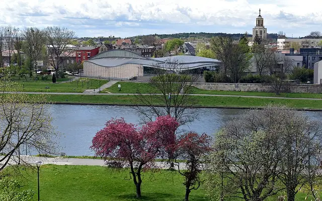
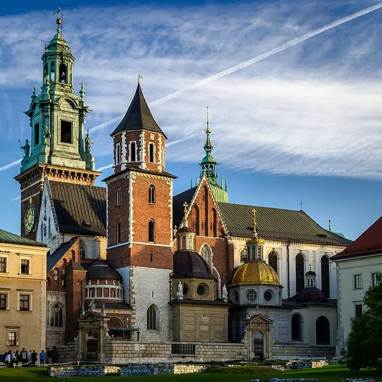
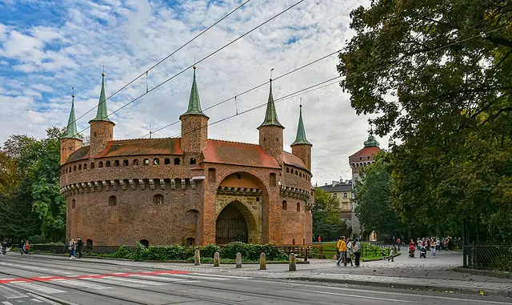
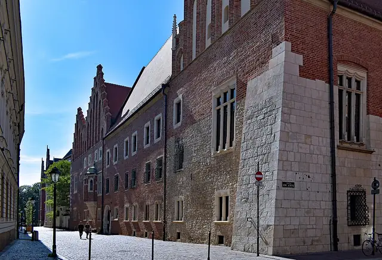
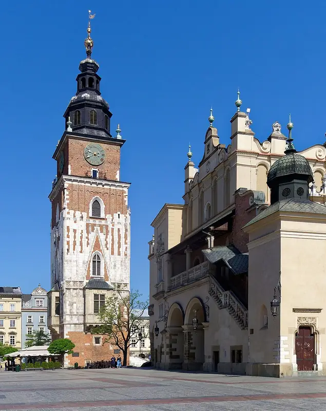
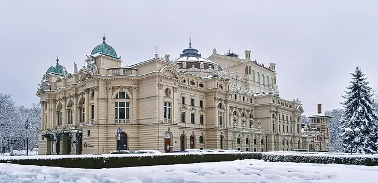
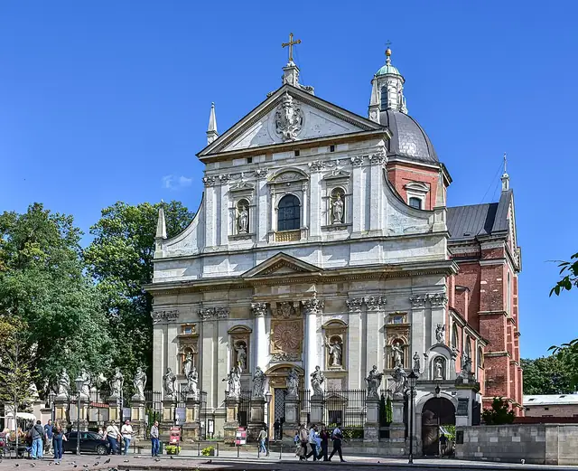
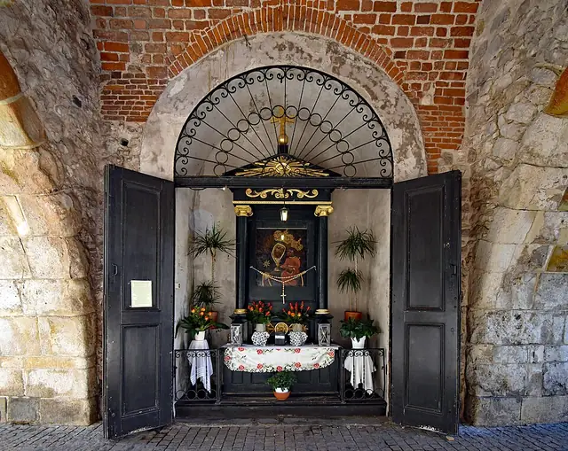
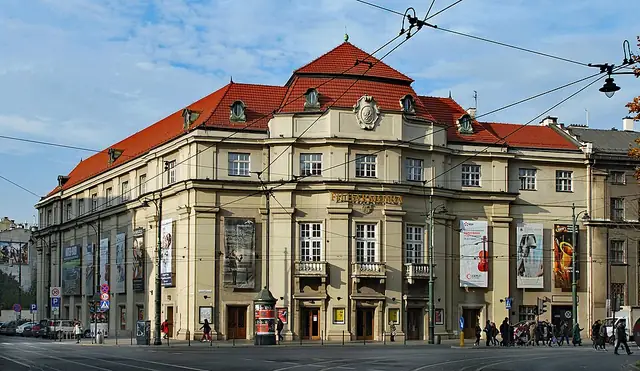
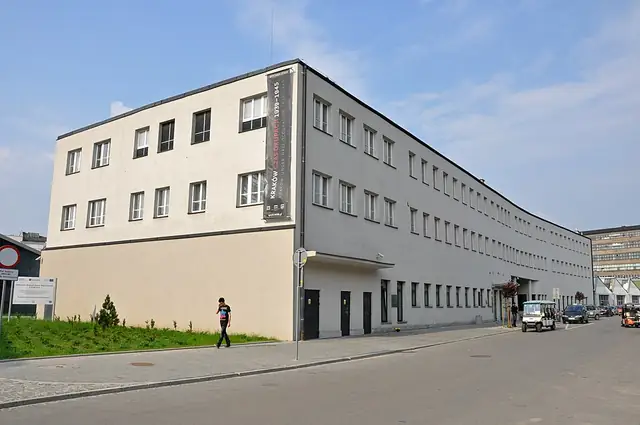

The Royal Capital City
Kraków architecture
Kraków was Poland's royal capital until King Sigismund III Vasa moved the court to Warsaw in 1596, and its Main Market Square is the largest medieval market square in Europe. The bagel and its ring-shaped cousin, the obwarzanek krakowski, both come from Kraków.
- 15Landmarks
- 1307Oldest · St. Florian's Gate
- 80 mTallest · St. Mary's Basilica
- 8Architects
Map and Look Around
Tap a numbered pin to see that landmark from the street with Apple Look Around.
Eat and stay near
Restaurants
Hotels
From Apple Maps. Walking times are estimates from straight-line distance.
Before you go
- Fly intoJohn Paul II Kraków-Balice International Airport (KRK)
John Paul II Kraków-Balice International Airport lies in the village of Balice, about 11 km west of the city centre, and is named after Pope John Paul II. It is Poland's second-busiest airport after Warsaw Chopin, handling more than 11 million passengers in 2024. A train links the terminal to Kraków Główny station in about 17 minutes.
- CurrencyPolish Zloty (zł)
- LanguagePolish
Polish is a West Slavic language written in the Latin alphabet with extra letters such as ł, ż and ś. Greet people with 'Dzień dobry' (good day) or, among friends, a casual 'Cześć'.
- Getting aroundTrams & Buses
Public transport is built on a dense network of trams and buses run by a municipal company, and electric trams have served the city since 1901. Much of the historic Old Town is a pedestrian zone, so trams run around its edges instead of through it.
- Where to stayFind hotels in Kraków on Expedia Compare on Booking.com Vacation rentals on Vrbo
Stamped! may earn a commission when you book through these links.
- Tours and ticketsFind tours in Kraków on GetYourGuide More tours on Viator
Skip-the-line tickets and guided tours of the landmarks. Stamped! may earn a commission.
15 landmarks in Kraków
-
Photo: Monika Towiańska, CC BY-SA 4.0, via Wikimedia Commons Wawel Castle
Wawel Hill, Kraków, Poland
Perched on a limestone outcrop above the Vistula, Wawel Castle was home to Poland's kings for centuries and is the country's most important historic site. King Casimir III the Great built the castle in the 14th century, and after a fire in 1499 King Sigismund I rebuilt it from 1507 to 1536 as a Renaissance palace, led at first by the Italians Francesco Fiorentino and Bartolomeo Berrecci. Its arcaded courtyard has a taller top storey, a Polish twist on the Italian model. Today it is Poland's most visited art museum.
- Built
- 1536
- Architect
- Francesco Fiorentino and Bartolomeo Berrecci
- Style
- Renaissance
- Today
- Museum
-
Photo: Zygmunt Put, CC BY-SA 4.0, via Wikimedia Commons St. Mary's Basilica
Mariacki Square 5, Kraków, Poland
St. Mary's Basilica rises over the north-east corner of the Main Market Square, a showcase of Polish Brick Gothic completed in the 14th century on 13th-century foundations. Its taller tower reaches 80 metres, and every hour a trumpeter plays the Hejnał mariacki from the top, breaking off mid-tune in memory of a legendary trumpeter shot while warning of a Mongol attack. Inside stands the huge carved wooden altarpiece by Veit Stoss, with murals designed by the painter Jan Matejko.
- Built
- 1347
- Style
- Brick Gothic
- Height
- 80 m (262 ft)
- Today
- Church
-
Photo: Zygmunt Put, CC BY-SA 4.0, via Wikimedia Commons Cloth Hall
Main Market Square 3, Kraków, Poland
The long Cloth Hall, or Sukiennice, sits right in the middle of the Main Market Square and has been a trading hall for centuries. In its golden age in the 15th century, merchants sold spices, silk and leather from the East here, while Kraków exported cloth, lead and salt. The hall gained its Renaissance look in the 16th century and was restored in the 1870s to a design by Tomasz Pryliński. Souvenir stalls still fill the arcade, and upstairs a gallery of 19th-century Polish art has been open since 1879.
- Built
- 1559
- Architect
- Tomasz Pryliński (1870s restoration)
- Style
- Renaissance
- Today
- Market hall and museum
-

Photo: Zygmunt Put Zetpe0202, CC BY-SA 4.0, via Wikimedia Commons Manggha Museum
26 Marii Konopnickiej Street, Kraków, Poland
The Manggha Museum of Japanese Art and Technology was born from a film director's dream. Andrzej Wajda saw Feliks 'Manggha' Jasieński's Japanese art collection as a young man in 1944, and in 1987 he gave his Kyoto Prize money to build it a home. Pritzker Prize-winning architect Arata Isozaki donated the design, with Krzysztof Ingarden among the Polish collaborating architects, and the museum opened on 30 November 1994. Emperor Akihito and Empress Michiko visited in 2002.
- Built
- 1994
- Architect
- Arata Isozaki
- Today
- Museum
-

Photo: Jar.ciurus, CC BY-SA 3.0 pl, via Wikimedia Commons Wawel Cathedral
Wawel 1, Kraków, Poland
Wawel Cathedral, nearly 1,000 years old, sits on Wawel Hill next to the castle and is Poland's national sanctuary. The present Gothic church is the third on the site and was consecrated in 1364 under King Casimir III the Great. From 1320 until 1764 Polish monarchs were crowned at its high altar, and many are buried here. Its golden-domed Sigismund Chapel, built from 1517 to 1533 by the Florentine Bartolomeo Berrecci, is a Renaissance gem.
- Built
- 1364
- Style
- Gothic
- Today
- Cathedral
-

Photo: Jeremiah Z. Cockroach, CC BY-SA 4.0, via Wikimedia Commons Barbican
Basztowa Street, Kraków, Poland
The round brick Barbican guarded the road into medieval Kraków. It was built around 1498, when the city feared an Ottoman attack after a Polish defeat in the Cosmin Forest. It is one of only three such fortified outposts left in Europe and the best preserved, with seven turrets, walls 3 metres thick and 130 openings for weapons. A covered passage once linked it to St. Florian's Gate, and today it is part of the Historical Museum of Kraków.
- Built
- 1498
- Style
- Gothic
- Today
- Museum
-

Photo: Zygmunt Put, CC BY-SA 4.0, via Wikimedia Commons Collegium Maius
Jagiellońska Street 15, Kraków, Poland
Collegium Maius is the oldest building of the Jagiellonian University, Poland's first university, founded in 1364. King Władysław II Jagiełło bought the house for the school with money left by Queen Jadwiga, and in the late 15th century it was rebuilt in late Gothic style around an arcaded courtyard. Nicolaus Copernicus studied here in the 1490s. Today it holds the university museum, with professors' rooms, Gothic maces and the Jagiellonian globe.
- Built
- 1364
- Style
- Gothic
- Today
- Museum
-

Photo: Jakub Hałun, CC BY-SA 4.0, via Wikimedia Commons Town Hall Tower
Main Market Square 1, Kraków, Poland
The Town Hall Tower is all that is left of Kraków's old town hall, which was pulled down in 1820 to open up the Main Market Square. Built of stone and brick at the end of the 14th century, the Gothic tower stands 70 metres tall and leans about 55 centimetres, the result of a storm in 1703. Its cellars once held a city prison with a torture chamber. Visitors can climb to the top floor for views across the square.
- Built
- 1400
- Style
- Gothic
- Height
- 70 m (230 ft)
- Today
- Museum
-

Photo: Jeremiah Z. Cockroach, CC BY-SA 4.0, via Wikimedia Commons Juliusz Słowacki Theatre
Świętego Ducha Square 1, Kraków, Poland
The Juliusz Słowacki Theatre opened in 1893 on Holy Spirit Square, on the site of a 14th-century church whose demolition caused an uproar. Architect Jan Zawiejski modelled it on great European theatres such as the Palais Garnier in Paris. It was the first building in Kraków designed with electric light, powered by its own small plant next door. Named after the poet Juliusz Słowacki in 1909, it stages drama and opera.
- Built
- 1893
- Architect
- Jan Zawiejski
- Style
- Eclecticism
- Today
- Theatre
-

Photo: Jeremiah Z. Cockroach, CC BY-SA 4.0, via Wikimedia Commons Church of Saints Peter and Paul
Grodzka Street 52a, Kraków, Poland
The Church of Saints Peter and Paul was the first building in Kraków designed fully in the Baroque style. King Sigismund III Vasa paid for it for the Jesuits, and it was built from 1597 to 1619, with Giovanni Maria Bernardoni refining an earlier design. It is the largest of the city's historic churches by seating. Statues of the twelve apostles stand on pillars in front of the façade, today copies of the 18th-century originals damaged by acid rain.
- Built
- 1619
- Architect
- Giovanni Maria Bernardoni
- Style
- Baroque
- Today
- Church
-
Ark of the Lord Church
Obrońców Krzyża Street 1, Kraków, Poland
The Ark of the Lord Church was the first new church built in Nowa Huta, a Communist-era new town planned without one. After years of protests, Cardinal Karol Wojtyła, the future Pope John Paul II, laid its cornerstone in 1969, and he consecrated it in 1977. Architect Wojciech Pietrzyk shaped it like Noah's Ark, with a sweeping roof and a 70-metre mast topped by a crowned cross. During martial law in the 1980s it became a centre of anti-communist resistance.
- Built
- 1977
- Architect
- Wojciech Pietrzyk
- Style
- Modernism
- Today
- Church
-

Photo: Zygmunt Put, CC BY-SA 4.0, via Wikimedia Commons St. Florian's Gate
Pijarska Street, Kraków, Poland
St. Florian's Gate is the best-known surviving piece of Kraków's medieval walls and the classic way into the Old Town. The stone Gothic tower is first mentioned in 1307, after a Tatar raid in 1241 pushed the city to build stronger defences. It stands 33.5 metres tall, topped by a Baroque metal helmet from 1660. It was once linked by a long bridge to the Barbican across the moat and was guarded by the city's furriers' guild.
- Built
- 1307
- Style
- Gothic
- Height
- 34 m (110 ft)
- Today
- City gate
-

Photo: Zygmunt Put Zetpe0202, CC BY-SA 4.0, via Wikimedia Commons Kraków Philharmonic Hall
Zwierzyniecka Street 1, Kraków, Poland
The Kraków Philharmonic Hall is the city's main concert hall and home to the Kraków Philharmonic Orchestra. Architect Józef Pokutyński designed it with neo-Baroque touches inspired by the Maison du Peuple in Brussels, and it was completed in 1931 with support from Cardinal Adam Stefan Sapieha. The main hall seats 693 people, joined by the smaller Golden and Blue halls for chamber music. A new organ by Klais of Bonn was installed in 1996.
- Built
- 1931
- Architect
- Józef Pokutyński
- Style
- Neo-Baroque
- Today
- Concert hall
-

Photo: Jennifer Boyer, CC BY 2.0, via Wikimedia Commons Oskar Schindler's Enamel Factory
Lipowa Street 4, Kraków, Poland
This factory in the Zabłocie district was founded in 1937 by three Jewish businessmen to make enamel pots and metal goods. During the Second World War it was run by Oskar Schindler, whose story was told in the 1993 film Schindler's List. Its old office building now houses a branch of the Historical Museum of Kraków, while the former workshops are home to MOCAK, the Museum of Contemporary Art in Kraków.
- Built
- 1937
- Today
- Museum
-
Photo: Zygmunt Put Zetpe0202, CC BY-SA 4.0, via Wikimedia Commons Collegium Novum
Gołębia Street 24, Kraków, Poland
Collegium Novum is the neo-Gothic main building of the Jagiellonian University and its administrative heart. Architect Feliks Księżarski designed it to match the university's oldest building, and it was built from 1873 to 1887 on the site of a student hostel destroyed by fire. It opened on 14 June 1887 in time for the university's 500th anniversary celebrations. Inside is the grand assembly hall, the Aula, along with the offices of the rector and deans.
- Built
- 1887
- Architect
- Feliks Księżarski
- Style
- Gothic Revival
- Today
- University building
.jpg){kind=link}


The app's quiz · 10 questions
How well do you know Kraków?
The same quiz as in Stamped!: name the landmark, its architect, its style or the year it was finished. Every round is different.
Know Kraków well?
Locals know their city best. Suggest a landmark we're missing, a fix to one we have, or share your own photo of one. Every suggestion is checked before it goes into the app.
More cities in Europe
- Amsterdam
- Antwerp
- Athens
- Barcelona
- Bath
- Berlin
- Bilbao
- Brussels
- Budapest
- Copenhagen
- Cork
- Dublin
- Edinburgh
- Florence
- Glasgow
- Granada
- Hamburg
- Helsinki
- Istanbul
- Lisbon
- London
- Madrid
- Marseille
- Milan
- Munich
- Naples
- Nice
- Oslo
- Paris
- Porto
- Prague
- Reykjavik
- Riga
- Rome
- Rotterdam
- Salzburg
- Seville
- St. Petersburg
- Stockholm
- Tbilisi
- Valencia
- Venice
- Vienna
- Warsaw
- Zurich
Stamp all 15 in Stamped!
Fly through Kraków in photoreal 3D, take its 10-question quiz, plan your days and earn a passport stamp at every landmark. Free on iPhone, iPad, Mac and Apple Vision Pro.
Download on theApp StoreEnjoying the guides? Leave a tip to help keep new cities coming.